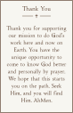

Prayer cards
Each card is etched with the prayer and a fine border, then cut out along the border's edge.
About us
Prayers That Grow is Ken & Ann's small business in Texas. We make plantable prayer cards to help people pray every day.
The idea is simple. You plant a seed card in a pot of soil, water it every day, and read the prayer aloud each time you water. The plant keeps time with the prayer.
"As the plant sprouts and grows to bloom, they grow and bloom in Spirit."

In our words
Thank you for supporting our mission to do God's work here and now on Earth. You have the unique opportunity to come to know God better and personally by prayer. We hope that this starts you on the path. Seek Him, and you will find Him. AhMen.
How each set is made
Nothing is printed. Ken lays the cardstock on the laser, which burns in every letter and picture and then cuts each card free.
Each card is etched with the prayer and a fine border, then cut out along the border's edge.
The front is etched and cut. Each card is then turned over into its own space on the laser, so the planting steps line up on the back.
The wildflower seed paper is engraved gently with the verse reference, so the seeds inside stay ready to grow.
When it arrives
The thank-you card comes first, then the prayer card, with the seed swatch tucked behind it.
Put soil in a pot, lay the swatch on it and cover it with a thin layer of soil. A sunny window helps in winter.
Read the prayer aloud each time you water. Sprouts usually appear within a few weeks; flowers take longer.
If nothing sprouts, tell us and we'll send a new swatch. When it blooms, there is a next prayer waiting.